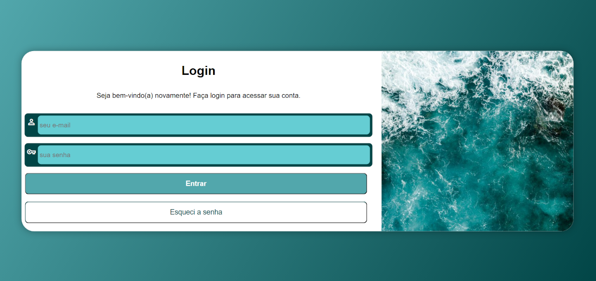
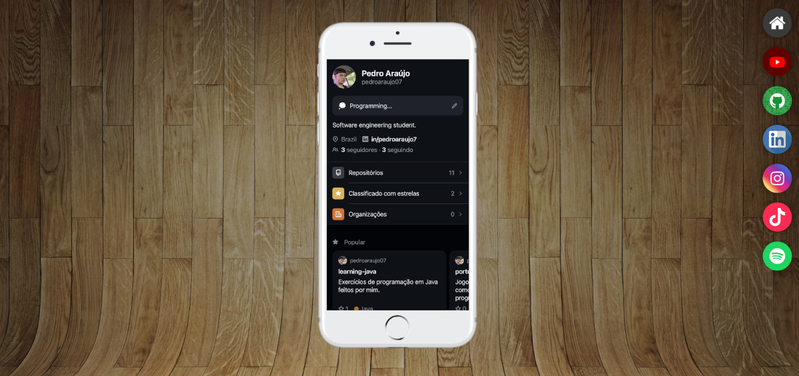
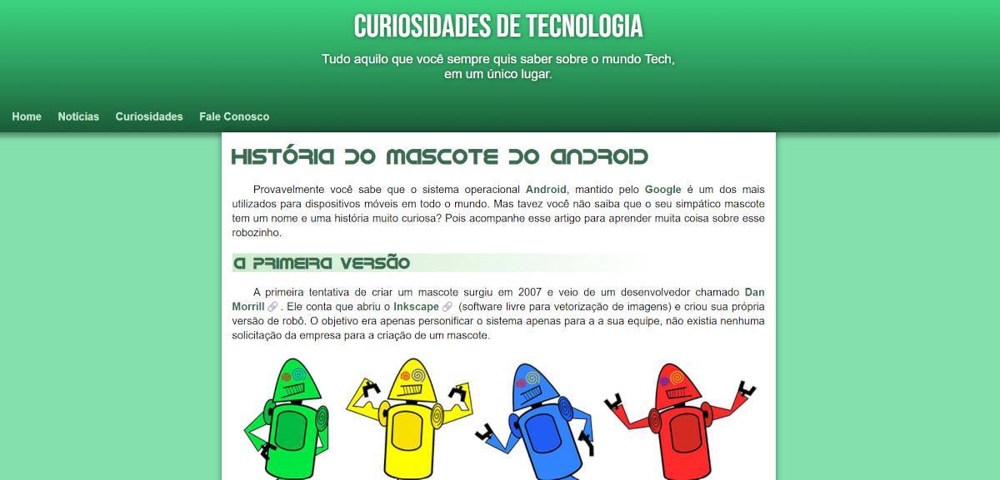
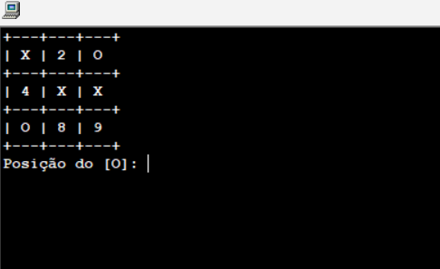

Pedro Araújo
Cursando Engenharia de Software, com foco em desenvolvimento web, banco de dados, e backend. Apaixonado por tecnologia desde 2026 e sempre em busca de novos aprendizados, tanto nessa área como na vida. Atualmente em busca de estágio e desenvolvendo projetos com código aberto.
Minhas skills
Formação
Projetos

Julho 2026
Projeto Login
Projeto construído para treinar responsividade e formulários em uma das telas mais populares em sistemas.
Saiba mais...
Criar uma tela de login é algo muito comum na vida de quem vai construir sites. Mas essa tela de login deve conter componentes bonitos e com funcionalidades bem definidas e intuitivas de usar. Essa tela de login vai adaptando seus conteúdos usando caixas flexíveis (flexbox) para funcionar em qualquer tamanho de tela.
Acesse aqui
Julho 2026
Projeto Redes Sociais
Projeto construído para treinar responsividade e múltiplos media queries e divulgar as suas principais redes sociais.
Saiba mais...
Um meta projeto muito interessante deixa o visitante interagir com um aparelho de smartphone que tem seu conteúdo carregado a cada vez que você clica em um ícone de redes sociais. Interatividade e responsividade para um projeto bem elaborado e que utiliza iframes na sua estrutura principal.
Acesse aquiJunho 2026
Projeto Cordel
Projeto construído para treinar efeito parallax em imagens e a apresentaçao de conteúdo em diversos tamanhos de tela.
Saiba mais...
Apresentar um conteúdo na tela de forma criativa é sempre um desafio aos desenvolvedores de sites. Nesse projeto, apresentamos um cordel de maneira bem-humorada, responsiva e usando técnicas como parallax para exibição de imagens de fundo.
Acesse aqui
Junho 2026
Projeto Android
Projeto construído para treinar conteúdos e imagens dinâmicas com a História do sistema Android.
Saiba mais...
Você sabia que o sistema Android não foi criado inicialmente para ser usado em celulares? Acompanhe esse projeto para conhecer um pouco mais sobre as curiosidades que envolvem o sistema mais popular para smartphones e aprenda como adaptar mídias a diferentes tamanhos de tela.
Acesse aqui
Março 2026
Jogo da Velha em Portugol
Projeto simples de jogo da velha desenvolvido em Portugol como exercício de lógica de programação.
Saiba mais...
O objetivo do projeto foi praticar conceitos básicos de Algoritmo, como matrizes, estruturas de repetição, condições e procedimentos. A construção desse projeto foi um desafio para mim, tive que quebrar a cabeça para realizá-lo, mas com certeza melhorou minha capacidade lógica de programação.
Acesse aqui